About arc42
arc42, the template for documentation of software and system architecture.
Template Version 8.2 EN. (based upon AsciiDoc version), January 2023
Created, maintained and © by Dr. Peter Hruschka, Dr. Gernot Starke and contributors. See https://arc42.org.
1. Introducción
Este documento describe la aplicación web YOVI, encargada por la empresa desarrolladora de juegos Micrati. La aplicación permite a sus usuarios jugar a variantes del juego de conexión Y, con la opción de jugar contra bots o contra otros jugadores.
Además, dispone de una API abierta que permite acceder al historial de partida y a las estadísticas de jugador, a través de la misma aplicación web o mediante llamadas a la API.
La aplicación está basada en un sistema de prueba desarrollada por la misma empresa, sobre la que implementamos las funcionalidades necesarias para llevar la aplicación al mercado.
1.1. Resumen de Requisitos
Los requisitos de alto nivel para la aplicación YOVI son:
| Prioridad | Requisito |
|---|---|
1 |
Debe soportar el modo de juego clásico que enfrenta a un jugador con la máquina. |
2 |
Debe estar desplegada en la nube y ser públicamente accesible a través de la web. |
3 |
Debe contar con una interfaz web que permita a los usuarios jugar al juego Y. |
4 |
Debe ofrecer varias estrategias de juego que los usuarios puedan seleccionar junto a un nivel de dificultad para la máquina. |
5 |
Debe proporcionar un sistema de registro y autenticación, que permita a los usuarios consultar sus estadísticas e histórico de participación en el sistema. |
6 |
Debe exponer una API que permita el acceso y la gestión de la información de los usuarios. |
7 |
Debe posibilitar que se juege a través de la API, ya sea para implementaciones públicas o a través de bots. |
1.2. Objetivos de Calidad
The top three (max five) quality goals for the architecture whose fulfillment is of highest importance to the major stakeholders. We really mean quality goals for the architecture. Don’t confuse them with project goals. They are not necessarily identical.
Consider this overview of potential topics (based upon the ISO 25010 standard):

You should know the quality goals of your most important stakeholders, since they will influence fundamental architectural decisions. Make sure to be very concrete about these qualities, avoid buzzwords. If you as an architect do not know how the quality of your work will be judged…
A table with quality goals and concrete scenarios, ordered by priorities
Los objetivos de calidad principales para la aplicación YOVI son:
| Prioridad | Objetivo | Descripción |
|---|---|---|
Alta |
Interoperabilidad |
La aplicación web y el módulo Rust deben comunicarse de forma fiable mediante los estados de juego YEN en mensajes JSON. |
Alta |
Mantenibilidad |
La arquitectura debe permitir añadir nuevas estrategias y variantes de juego, además de mejoras en la API sin afectar al núcleo del sistema. |
Alta |
Fiabilidad |
La lógica de juego del módulo Rust debe ofrecer respuestas correctas y consistentes para la evaluación de partidas. |
Media |
Escalabilidad |
El sistema debe soportar múltiples usuarios y bots interactuando con la aplicación de forma simultánea. |
Media |
Usabilidad |
La aplicación debe presentar una interfaz web clara, accesible y fácil de usar. |
1.3. Grupos de Interés
Los grupos de interés en el desarrollo de la aplicación YOVI son:
| Grupo | Interés |
|---|---|
Usuarios finales |
Poder accedar al juego Y con una experiencia atractiva y fluida. |
Bots externos |
Interactuar con el sistema mediant un API estable y documentado correctamente. |
Equipo de desarrollo |
Trabajar con una arquitectura clara, modular y mantenible. |
Profesores |
Verificar la calidad arquitectónica, la documentación y la implementación del sistema. |
Micrati |
Disponer de un producto que cumpla con los requisitos deseados. |
2. Restricciones de la Arquitectura
La aplicación YOVI debe cumplir con los estándares siguientes:
-
La aplicación web y la API deben desarrollarse en TypeScript, mientras que la lógica de juego debe desarrollarse en Rust.
-
El módulo de lógica de juego debe ofrecer un servicio web básico accesible desde la aplicación web.
-
Los módulos de aplicación y lógica de juego deben comunicarse a través de mensajes JSON, representando el estado de juego en notación YEN.
-
La aplicación web debe estar desplegada públicamente y la API documentada, permitiendo la interacción con bots.
-
La base de código debe mantenerse en un repositorio bien gestionado y se debe cumplir con los plazos de entrega propuestos.
3. Contexto y Alcance
El sistema propuesto forma parte del ecosistema de juegos de la empresa Micrati. Por tanto, deberá poder coexistir e interoperar con otros juegos de navegador dentro del mismo ecosistema. En este caso se provee un servicio de gestión de usuarios (users) que se asume ya existe y es accedido por los demás juegos, pero se proporciona por defecto.
3.1. Contexto de negocio
Actores y sistemas externos principales:
-
Jugador (usuario principal): interactúa a través del navegador con el módulo
webapppara registrarse, autenticarse y jugar. -
Administrador (usuario moderador): interactúa con el navegador para gestionar configuración del sistema y moderación de usuarios.
-
Navegador / Cliente Web: transporte HTTP(S) entre usuario y
webapp. -
Registro de contenedores: almacena y despliega imágenes Docker del ecosistema.
-
Persistencia: servicio de base de datos que almacena información de usuarios y registros de partidas (datos de juego, puntuaciones e historial).
3.2. Contexto técnico
Este apartado describe los canales técnicos, protocolos y medios de transmisión utilizados para la interacción entre el sistema y su entorno.
Canales y protocolos previstos:
-
HTTP/HTTPS (REST + JSON): canal primario entre
webapp,usersygamey. -
Docker / Docker Compose: empaquetado y orquestación local para desarrollo y pruebas.
Además, también se cuenta con herramientas previstas para métricas, alertas y paneles:
-
Prometheus (scrape/HTTP): recolecta métricas expuestas por los servicios.
-
Grafana: visualización y dashboards basados en datos de Prometheus y otras fuentes.
4. Estrategia de la Solución
La solución propuesta se compone de tres subsistemas principales, cada uno con responsabilidades claras, siguiendo un patrón basado en microservicios:
-
gamey: Backend del juego, implementado en Rust. Responsable del motor de partidas y reglas del juego, con endpoints para manejar partidas. -
users: Servicio de gestión de usuarios, implementado en Node.js. Encargado del manejo de usuarios y autenticación. -
webapp: Frontend, implementado en React. Implementación de interfaces gráficas de usuario que permiten la comunicación del usuario con el resto de la aplicación.
El sistema está destinado a ser desplegado en un servidor remoto y ser accedido por una dirección IP pública para ser ejecutado desde un navegador, aunque también peuede puede ser desplegado en local empleando Docker con el correspondiente fichero docker-compose.yml.
Se provee de integración con Prometheus y Grafana que provee acceso a logs y métricas sobre el sistema, accesibles desde el módulo users.
5. Building Block View
La vista de bloques muestra la descomposición estática del sistema y sus dependencias principales.
5.1. Whitebox Overall System
Overview Diagram
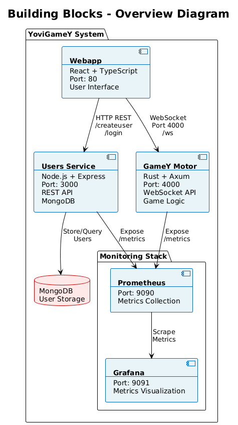
- Motivation
-
El sistema se descompone en cuatro bloques principales siguiendo una arquitectura de microservicios desacoplados:
-
webapp: interfaz de usuario -
users: microservicio REST -
gamey: motor de juego en Rust -
Stack de monitorización
-
Esta separación permite bajo acoplamiento, escalabilidad independiente y separación clara entre lógica de dominio y presentación.
- Contained Building Blocks
| Name | Responsibility |
|---|---|
webapp |
Interfaz de usuario desarrollada en React con TypeScript. |
users |
Microservicio Node.js/Express para gestión de usuarios. |
gamey |
Motor de juego que implementa la lógica del dominio. |
Monitoring Stack |
Monitorización con Prometheus y Grafana. |
- Important Interfaces
-
-
HTTP REST entre
webappyusers(puertos 3000) -
WebSocket entre
webappygamey(puerto 4000) -
Endpoint
/metricspara Prometheus -
Comunicación interna mediante red Docker
monitor-net
-
5.1.1. webapp
Purpose/Responsibility
Gestiona la interacción con el usuario, autenticación (login/registro) y realiza llamadas HTTP al backend y WebSocket al motor de juego.
Interface(s)
-
POST
/createuser- Crear nuevo usuario (ausers) -
POST
/login- Autenticar usuario (ausers) -
WebSocket
/ws(agamey, puerto 4000)
Directory/File Location
webapp/
5.1.2. users
Purpose/Responsibility
Servicio REST que gestiona el registro, autenticación y almacenamiento de usuarios. Expone métricas del sistema mediante Prometheus.
Interface(s)
-
POST
/createuser- Crear usuario -
POST
/login- Autenticar usuario -
GET
/- Listar usuarios -
GET
/username/:username- Obtener usuario por nombre -
GET
/:id- Obtener usuario por ID -
DELETE
/:id- Eliminar usuario -
GET
/metrics- Métricas de Prometheus
Directory/File Location
users/
5.1.3. gamey
Purpose/Responsibility
Implementa la lógica del juego de Y, incluyendo algoritmos de inteligencia artificial para oponentes computacionales. Funciona como servidor HTTP con soporte WebSocket.
Interface(s)
-
WebSocket
/ws- Comunicación bidireccional de juego (puerto 4000) -
GET
/status- Health check -
GET
/bots- Listar bots disponibles -
GET
/metrics- Métricas de Prometheus -
CLI - Línea de comandos para juego local
-
Biblioteca Rust - API interna reutilizable
Directory/File Location
gamey/
5.1.4. Monitoring Stack
Purpose/Responsibility
Recolecta y visualiza métricas del sistema mediante Prometheus y Grafana.
Interface(s)
-
Scraping de
/metricsdesdeusersygamey -
Dashboards en Grafana (puerto 9091)
Location
docker-compose.yml
5.2. Level 2
5.2.1. White Box webapp
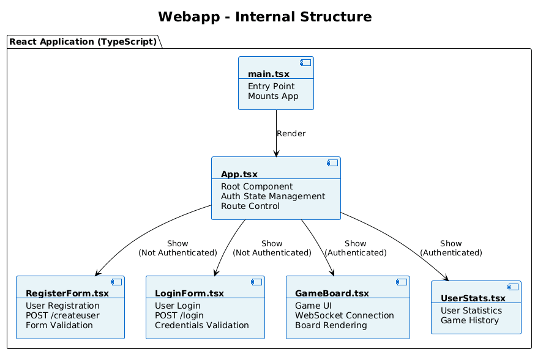
- Motivation
-
Se detalla la estructura interna por ser el punto de entrada del sistema y responsable de la autenticación de usuarios, gestión de sesión y visualización del tablero de juego.
| Name | Responsibility |
|---|---|
main.tsx |
Punto de entrada de la aplicación React. |
App.tsx |
Componente raíz que gestiona el estado de autenticación. |
RegisterForm.tsx |
Componente de registro de nuevos usuarios con validación. |
LoginForm.tsx |
Componente de login de usuarios existentes. |
GameBoard.tsx |
Componente principal para visualizar y jugar al tablero de juego. |
UserStats.tsx |
Componente para mostrar estadísticas del usuario. |
5.2.2. White Box users
- Motivation
-
El servicio
userses un microservicio REST independiente que gestiona toda la lógica de autenticación y persistencia de usuarios. Su separación permite escalabilidad independiente y reutilización por otros servicios.
| Name | Responsibility |
|---|---|
users-service.js |
Punto de entrada. Configura Express, CORS, middleware de métricas y rutas. |
user-routes.js |
Definición de rutas REST ( |
user-controller.js |
Controladores que procesan las peticiones HTTP. |
user-service.js |
Lógica de negocio (validación, autenticación, CRUD). |
user-model.js |
Esquema Mongoose para la base de datos. |
userDB.js |
Conexión y operaciones de base de datos. |
gestorDBUSER.js |
Gestor alternativo para operaciones en base de datos. |
5.2.3. White Box gamey
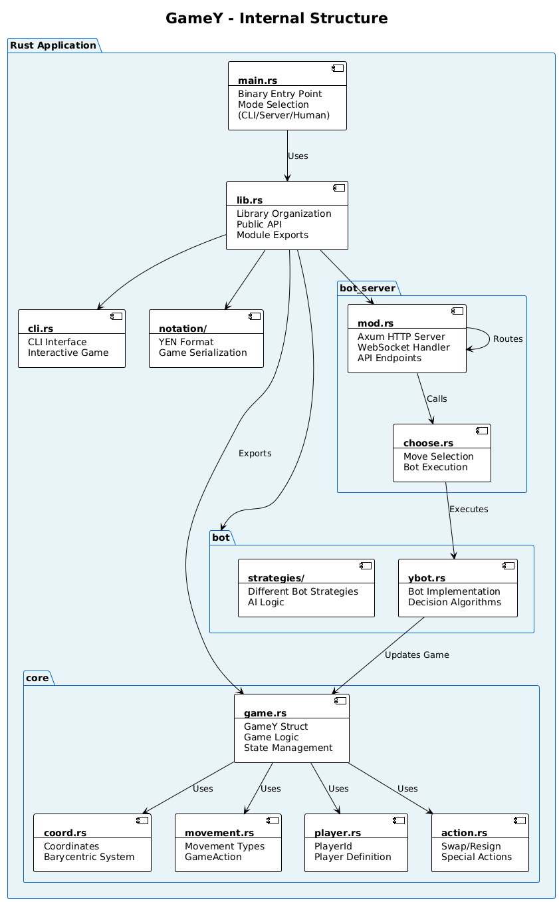
- Motivation
-
Contiene la lógica más compleja del sistema, implementada en Rust para máximo rendimiento. Está estructurada en módulos claramente separados: lógica de juego (core), estrategias de IA (bot), servidor HTTP (bot_server), interfaz de usuario (cli) y serialización (notation).
| Name | Responsibility |
|---|---|
main.rs |
Selección de modo de ejecución (CLI, servidor HTTP en puerto 4000, o humano vs IA). |
lib.rs |
Organización modular y re-exportación de tipos públicos. |
core/ |
Tipos fundamentales del juego: lógica, coordenadas, movimientos, jugadores. |
bot/ |
Estrategias de inteligencia artificial y decisión de movimientos. |
bot_server/ |
Servidor Axum con WebSocket en |
cli/ |
Interfaz de línea de comandos para juego interactivo. |
notation/ |
Formato YEN para serialización de estado de juego. |
5.3. Level 3
5.3.1. White Box core (Núcleo del Juego)
- Motivation
-
El módulo
coreencapsula toda la lógica fundamental del juego de Y, incluyendo representación del tablero, gestión de estados y detección de victoria.
| Name | Responsibility |
|---|---|
game.rs |
Estructura principal |
coord.rs |
Sistema de coordenadas baricéntricas (x, y, z) para tablero triangular. |
movement.rs |
Tipos |
player.rs |
Tipos |
action.rs |
Definición de acciones especiales ( |
player_set.rs |
Estructura Union-Find privada para detección eficiente de conectividad. |
render_options.rs |
Opciones para visualización del tablero. |
5.3.2. White Box game.rs (Lógica Central)
- Motivation
-
Contiene el núcleo algorítmico del sistema, implementando toda la lógica del juego de Y: validación de movimientos, gestión de estado y detección de victorias mediante Union-Find.
| Name | Responsibility |
|---|---|
|
Encapsula el estado completo de una partida en progreso. |
|
Tamaño del tablero triangular (ej: 7). |
|
Mapea coordenadas baricéntricas a (SetIdx, PlayerId) - representa celdas ocupadas. |
|
Historial de movimientos realizados en orden cronológico. |
|
Vector de estructuras Union-Find, una por jugador, para detectar cadenas conectadas. |
|
Lista de índices de celdas disponibles donde se pueden colocar piezas. |
|
Representa si el juego está |
|
Estado de una celda: |
|
Método que retorna true si el juego ha terminado. |
|
Método que valida, aplica y registra un movimiento. |
5.3.3. White Box coord.rs (Sistema de Coordenadas)
- Motivation
-
Define el sistema de coordenadas baricéntricas utilizado para ubicar celdas en el tablero triangular. Este sistema es fundamental para la representación del estado del juego.
| Name | Responsibility |
|---|---|
|
Tupla (x, y, z) con la invariante x + y + z = board_size. Ubicación única de cada celda. |
|
Constructor que valida la invariante baricéntrica. |
|
Convierte coordenadas baricéntricas a índice lineal. |
|
Convierte índice lineal a coordenadas baricéntricas. |
5.3.4. White Box movement.rs (Tipos de Movimientos)
- Motivation
-
Define los tipos de movimientos que pueden realizarse en el juego, permitiendo operaciones más allá de colocación de piezas (ej: intercambios, abandonos).
| Name | Responsibility |
|---|---|
|
Movimiento del juego: |
|
Acción especial: |
5.3.5. White Box bot (Inteligencia Artificial)
- Motivation
-
Contiene las estrategias de decisión para jugadores controlados por computadora, permitiendo diferentes niveles de dificultad y estilos de juego.
| Name | Responsibility |
|---|---|
ybot.rs |
Interfaz |
strategies/ |
Directorio con diferentes estrategias implementadas (random, minimax, heurística, etc.). |
ybot_registry.rs |
Registro de bots disponibles para creación y administración. |
5.3.6. White Box bot_server (Servidor WebSocket)
- Motivation
-
Servidor Axum que expone la lógica del juego mediante WebSocket para comunicación real-time con clientes, permitiendo juego multijugador y contra IA.
| Name | Responsibility |
|---|---|
mod.rs |
Configuración del servidor Axum, rutas, y manejadores WebSocket. |
choose.rs |
Lógica de selección de movimiento del bot y respuesta al cliente. |
state.rs |
Estado compartido de la aplicación (registro de bots, sesiones). |
error.rs |
Tipos de error y respuestas HTTP/WebSocket. |
version.rs |
Gestión de versiones de API. |
6. Runtime View
Esta sección describe los escenarios dinámicos arquitectónicamente relevantes del sistema, mostrando cómo interactúan los bloques principales (webapp, users, gamey) durante la ejecución.
6.1. Runtime Scenario 1: Registro de usuario
6.1.1. Descripción del escenario
-
El usuario accede a la
webappdesde el navegador. -
Introduce su
usernameypassworden el formularioRegisterForm. -
El componente
RegisterFormejecuta la funciónhandleSubmit. -
La
webappenvía una petición HTTP POST ausers(ruta/createuser). -
El servicio
usersprocesa la petición, cifra la contraseña y almacena el usuario en MongoDB. -
usersdevuelve un mensaje JSON con el resultado (status 201 si es exitoso). -
La
webappactualiza su estado interno y almacena el usuario enlocalStorage. -
El mensaje de éxito se muestra en la interfaz.
-
El usuario es redirigido automáticamente a la pantalla principal.
6.1.2. Diagrama de secuencia
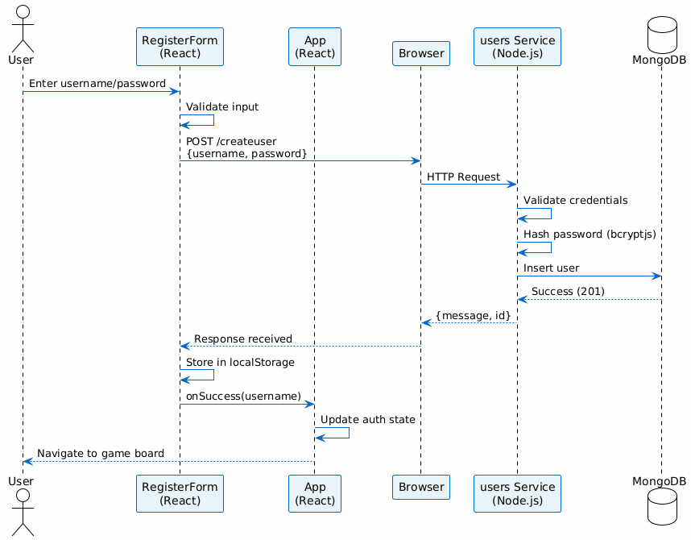
6.1.3. Aspectos arquitectónicamente relevantes
-
Comunicación síncrona mediante HTTP REST.
-
Separación clara entre frontend (React/TypeScript) y backend (Node.js/Express).
-
Gestión asíncrona del estado en React mediante hooks (
useState,fetch). -
Validación en cliente antes de enviar la petición.
-
Persistencia de autenticación mediante
localStorage. -
Cifrado de contraseñas con bcryptjs antes de almacenarlas.
-
Exposición de métricas Prometheus por parte de
users. -
Uso de CORS para permitir comunicación entre servicios.
6.2. Runtime Scenario 2: Autenticación de usuario (Login)
6.2.1. Descripción del escenario
-
El usuario accede a la
webappy ve el formulario deLoginForm. -
Introduce su
usernameypassword. -
El componente
LoginFormejecuta la funciónhandleSubmit. -
La
webappenvía una petición HTTP POST ausers(ruta/login). -
El servicio
usersbusca el usuario en MongoDB y verifica la contraseña. -
Si la autenticación es exitosa,
usersdevuelve status 200 con los datos del usuario. -
La
webappalmacena el username enlocalStoragey actualiza el estado de autenticación. -
El usuario accede al tablero de juego y componentes autenticados.
6.2.2. Diagrama de secuencia
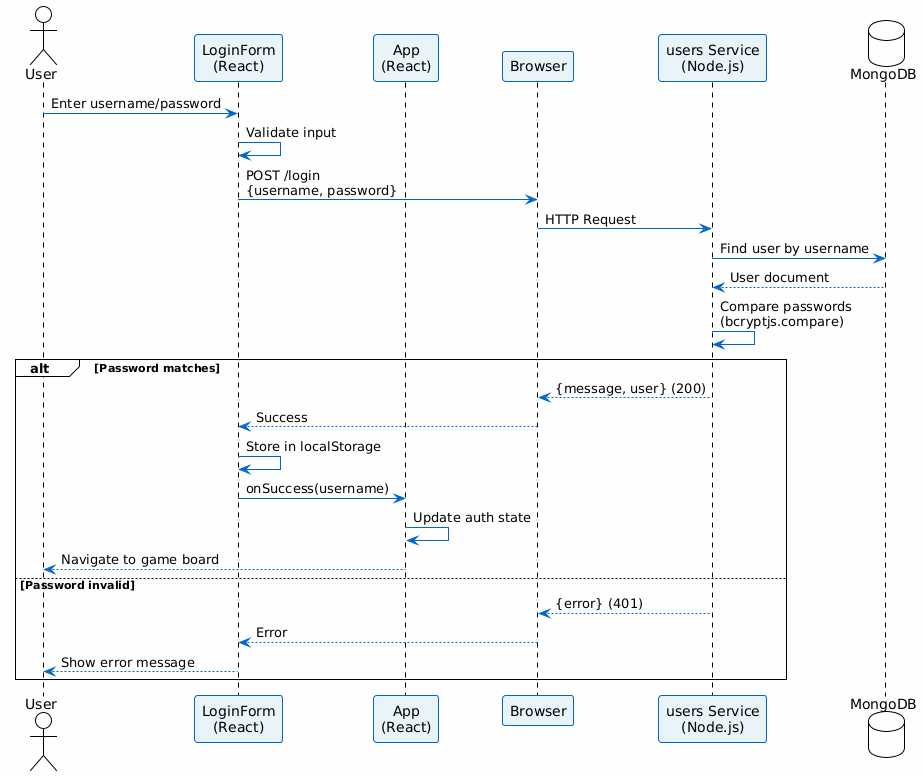
6.2.3. Aspectos arquitectónicamente relevantes
-
Validación de credenciales con bcryptjs.
-
Persistencia de sesión mediante
localStorage. -
Manejo de errores de autenticación (status 401).
-
Separación entre lógica de presentación y de negocio.
-
No se utilizan sesiones del servidor, sino validación stateless.
6.3. Runtime Scenario 3: Solicitud de movimiento al motor gamey mediante WebSocket
6.3.1. Descripción del escenario
-
El usuario autenticado accede al componente
GameBoard. -
El cliente establece una conexión WebSocket a
gamey(puerto 4000, ruta/ws). -
El usuario coloca una pieza en el tablero mediante interacción con la UI.
-
El cliente envía el movimiento en formato JSON a través del WebSocket.
-
gameyrecibe el movimiento y valida su legalidad. -
Se ejecuta la lógica de actualización del tablero en
core/game.rs. -
El servidor
gameycalcula si hay un ganador (mediante Union-Find). -
Se devuelve el estado del juego actualizado (tablero, estado, turno).
-
Si el modo es PvC (jugador vs computadora), el bot calcula automáticamente su movimiento.
-
El servidor envía el movimiento del bot al cliente.
-
La
webappactualiza la visualización del tablero en tiempo real.
6.3.2. Diagrama de secuencia
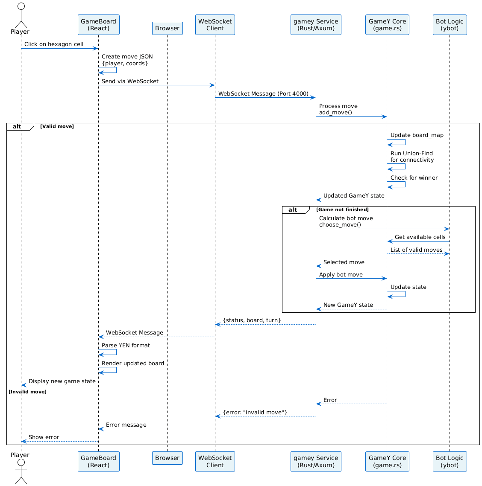
6.3.3. Aspectos arquitectónicamente relevantes
-
Comunicación bidireccional en tiempo real mediante WebSocket.
-
Separación clara entre capa de presentación (React) y lógica de dominio (Rust).
-
Motor desacoplado: funciona como CLI, servidor HTTP o biblioteca.
-
Uso de estructuras eficientes (Union-Find para detección de conectividad).
-
Validación de movimientos en el servidor.
-
Formato de serialización: YEN (notación de juego).
-
Escalabilidad: múltiples clientes simultáneos pueden conectarse.
6.4. Runtime Scenario 4: Inicio del sistema mediante Docker Compose
6.4.1. Descripción del escenario
-
El operador ejecuta
docker-compose up --builden la raíz del proyecto. -
Docker construye las imágenes de
webapp,usersygamey. -
Se levantan los contenedores correspondientes en orden de dependencias:
-
userscomienza primero (puerto 3000 interno). -
webappcomienza después, dependiendo deusers(puerto 80 interno). -
gameyinicia en paralelo (puerto 4000 interno).
-
-
Se crea la red Docker
monitor-netpara comunicación interna. -
userscomienza a exponer métricas en/metricsmedianteexpress-prom-bundle. -
prometheuscomienza a recolectarlas (puerto 9090). -
grafanapermite visualizar las métricas (puerto 9091, redirecciona a 3000 internamente). -
webappestá accesible desde el navegador enlocalhost(puerto 80). -
gameyestá accesible desdewebappenhost.docker.internal:4000o mediante nombre de servicio.
6.4.2. Diagrama de secuencia
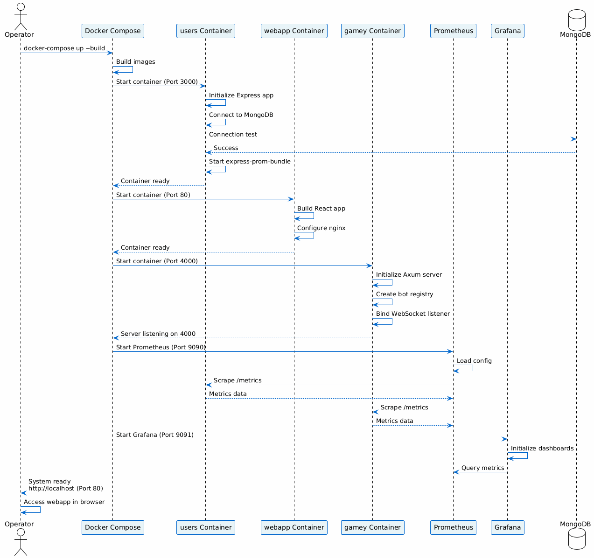
6.4.3. Aspectos arquitectónicamente relevantes
-
Infraestructura reproducible e inmutable mediante contenedores.
-
Aislamiento de servicios mediante red Docker interna.
-
Monitorización integrada con stack Prometheus + Grafana.
-
Comunicación segura entre servicios mediante red Docker.
-
Gestión de dependencias entre servicios (
depends_on). -
Puertos mapeados para acceso desde el host.
-
Variables de entorno para configuración dinámica (imagen tags, MONGODB_URI, etc.).
6.5. Runtime Scenario 5: Fallo del servicio users
6.5.1. Descripción del escenario
-
El usuario intenta registrarse o hacer login.
-
La
webappenvía la petición HTTP ausers(puerto 3000). -
El servicio
usersno está disponible (contenedor caído o red inaccesible). -
La petición falla por timeout o error de conexión (ERR_CONNECTION_REFUSED).
-
El componente React captura la excepción en el bloque
catchdelfetch. -
La
webappmuestra un mensaje de error al usuario. -
Prometheus detiene la recolección de métricas desde
users(error en scrape). -
Grafana muestra un estado de advertencia (series sin datos).
-
El usuario no puede acceder a funcionalidades que requieren autenticación.
-
Las funcionalidades locales de
gamey(si están disponibles) siguen siendo accesibles.
6.5.2. Diagrama de secuencia
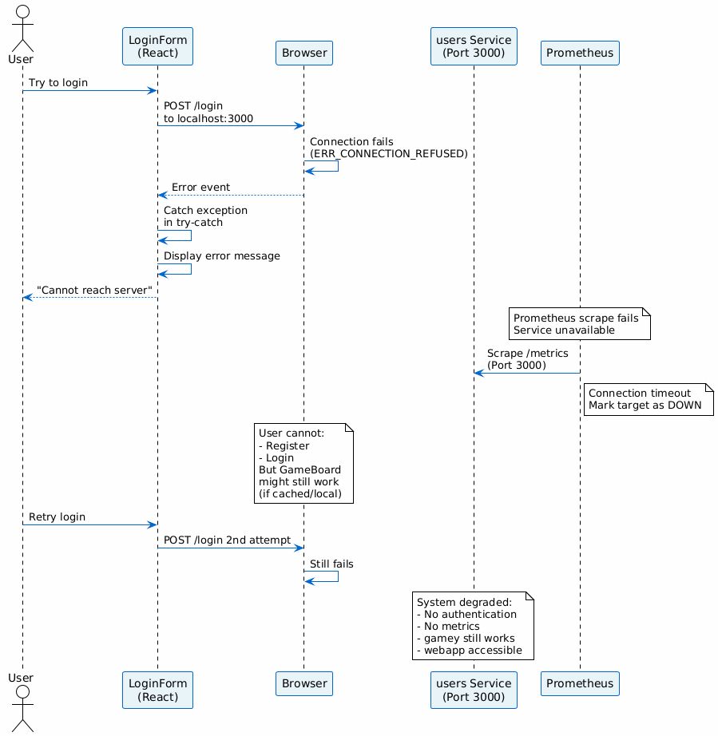
6.5.3. Aspectos arquitectónicamente relevantes
-
Manejo explícito de errores en React mediante bloques try-catch.
-
Timeouts configurables en cliente para fallos de red.
-
Arquitectura desacoplada que evita fallos en cascada.
-
Detección de fallos mediante monitorización (Prometheus/Grafana).
-
Degradación elegante: el sistema sigue parcialmente operativo.
-
Resiliencia: el usuario puede reintentar la operación.
-
Logs de error para debugging posterior.
6.6. Runtime Scenario 6: Fallo de gamey (Motor de juego)
6.6.1. Descripción del escenario
-
El usuario autenticado intenta jugar una partida.
-
La
webappintenta conectarse agameymediante WebSocket (puerto 4000). -
El servidor
gameyno está disponible (contenedor caído). -
La conexión WebSocket falla con error de conexión.
-
La
webappdetecta el error en el manejadoronErrordel WebSocket. -
Se muestra un mensaje de error al usuario.
-
Las funcionalidades de registro y login siguen siendo accesibles (independientes de
gamey). -
El usuario no puede jugar hasta que
gameyse recupere.
6.6.2. Diagrama de secuencia
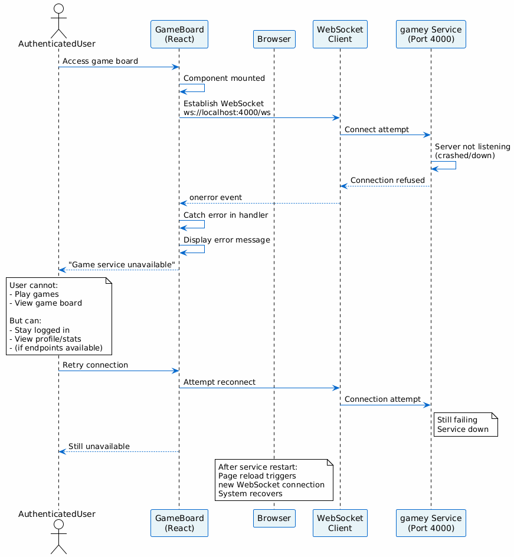
6.6.3. Aspectos arquitectónicamente relevantes
-
Aislamiento de fallos: el fallo de
gameyno afecta ausers. -
Manejo de reconexión automática mediante WebSocket.
-
Mensajes de error informativos al usuario.
-
Monitorización independiente de cada servicio.
-
Recuperación automática cuando el servicio se reinicia.
7. Vista de Despliegue
7.1. Infraestructura Nivel 1
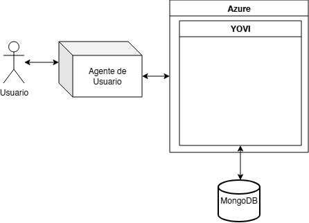
- Motivación
-
El sistema se desplegará en la nube de Oracle que conectará con una Base de Datos creada en MongoDB por distintas motivaciones:
-
Escalabilidad Automática: Oracle permite escalar según la carga de usuarios sin intervención manual.
-
Seguridad: Oracle proporciona cifrado de datos.
-
Flexibilidad: MongoDB es ideal ya que las entidades cambiaran con el tiempo.
-
Polimorfismo Sencillo: MongoDB permite modelas fácilmente el cambio entre entidades.
-
Rendimiento Excelente: MongoDB es óptimo para registros rápidos de eventos e interacciones frecuentes.
-
- Características de Calidad y/o Rendimiento
-
En esencia las características principales que se consigan al desplegar son:
-
Escalabilidad
-
Rendimiento
-
Seguridad
-
Eficiencia
-
- Mapeo de Bloques de Construcción a Infraestructura
-
En el estado actual del proyecto, el despliegue de la aplicación se realiza mediante la infraestructura proporcionada por GitHub, concretamente a través de GitHub Actions y el sistema de Releases.
- Proceso de despliegue
-
-
Se accede al repositorio del proyecto en Github, en la sección de código.
-
Desde la interfaz del repositorio, se navega a la sección de Releases.
-
Se crea una nueva release, lo que implica: — Crear una nueva etiqueta (tag) asociada a una versión del proyecto. — Definir un título, y, opcionalmente, una descripción de los cambios. — Seleccionar la rama sobre la que se desea realizar el despliegue.
-
En caso de tratarse de una versión no definitiva, se marca como pre-release, indicando que es una versión de pruebas.
-
Una vez creada la release, se inicia automáticamente el proceso de despliegue medainte workflows definidos en Github Actions.
-
El sistema ejecuta las tareas necesarias (compilación, tests, empaquetado y despliegue).
-
Si el proceso finaliza correctamente, la aplicación queda accesible a través del enlace generado, disponible en la sección de Actions o asociado a la propia release.
-
Este enfoque permite automatizar completamente el despliegue, garantizando consistencia entre versiones y facilitando la integración continua y entrega continua.
- Mapeo conceptual
-
-
Repositorio Github → Código fuentre de la aplicación.
-
Github Actions → Ejecución de pipelines de despliegue.
-
Releases → Versionado y activación del proceso de despliegue.
-
Infraestructura en la nuve (Oracle) → Entorno final donde se ejecuta la aplicación.
-
MongoDB → Sistema de almacenamiento de datos persistentes.
-
Este modelo permite desacoplar el desarrollo de despliegue, facilitando la evolución del sistema y asegurando trazabilidad entre versiones desplegadas.
8. Conceptos Transversales
Esta sección describe normas generales, ideas de solución y regulaciones principales que son relevantes en múltiples partes (= transversales) de tu sistema. Tales conceptos suelen estar relacionados con varios bloques de construcción. Pueden incluir muchos temas diferentes, como
-
modelos, especialmente modelos del dominio
-
patrones de arquitectura o de diseño
-
reglas para el uso de tecnologías específicas
-
decisiones principales, a menudo técnicas, de carácter general (= transversal)
-
reglas de implementación
Los conceptos forman la base de la integridad conceptual (consistencia, homogeneidad) de la arquitectura. Por lo tanto, son una contribución importante para lograr las cualidades internas de tu sistema.
Algunos de estos conceptos no pueden asignarse a bloques de construcción individuales, por ejemplo seguridad o protección.
La forma puede variar:
-
documentos de concepto con cualquier tipo de estructura
-
extractos de modelos transversales o escenarios usando notaciones de las vistas de arquitectura
-
implementaciones de ejemplo, especialmente para conceptos técnicos
-
referencias al uso típico de frameworks estándar (por ejemplo, usar Hibernate para el mapeo objeto/relacional)
Una posible (pero no obligatoria) estructura para esta sección podría ser:
-
Conceptos de dominio
-
Conceptos de experiencia de usuario (UX)
-
Conceptos de seguridad y protección
-
Patrones de arquitectura y de diseño
-
“Bajo el capó”
-
Conceptos de desarrollo
-
Conceptos operativos
Nota: puede ser difícil asignar conceptos individuales a un tema específico de esta lista.

Consulta Concepts en la documentación de arc42.
8.1. Concepto de Dominio
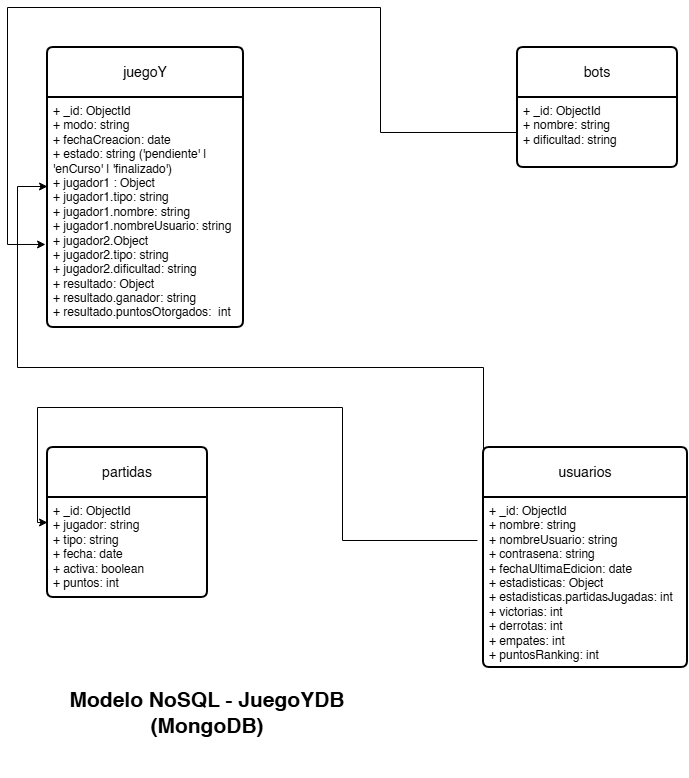
-
Usuarios: Tendrán nombre, nombre de usuario, contraseña, además de las estadísticas que irán variando según usen YOVI. Representan a los usuarios reales.
-
Bots: En caso de que un usuario no juegue contra otra persona real, jugará contra un bot, que tendrá nombre y dificultad.
-
JuegosY: Juego principal, con modo, jugadores y un resultado que se dará una vez su estado sea finalizado.
-
Partidas: Representa las partidas jugadas para facilitar el estado de la aplicación.
8.2. Conceptos de Experiencia de Usuario
La experiencia de usuario se centra en ofrecer una interfaz web clara, accesible y atractiva que permita a los jugadores interactuar de forma fluida con el "Juego Y". El sistema prioriza la facilidad de uso mediante un diseño intuitivo, asegurando que tanto el registro como la participación en las distintas modalidades de juego sean procesos sencillos y directos.
8.3. Conceptos de Seguridad
La seguridad de la aplicación se basa actualmente en el aislamiento de componentes mediante una arquitectura de microservicios y el uso de variables de entorno para proteger credenciales sensibles. El proyecto integra además análisis de calidad continuo en su flujo de desarrollo y planea implementar un sistema centralizado de autenticación para gestionar el acceso de forma segura.
8.4. Conceptos de Arquitectura
La arquitectura de la aplicación se basa en un sistema de microservicios independientes que desacoplan la interfaz web, el servicio de gestión de usuarios y el motor de lógica de juego desarrollado en Rust. Estos componentes interactúan mediante el intercambio de mensajes JSON y están contenedorizados con Docker para garantizar un despliegue consistente, escalable y reproducible en la nube.
8.5. Conceptos de Desarrollo
El desarrollo de la aplicación se fundamenta en un ciclo de integración y despliegue continuos (CI/CD) que prioriza el testing automatizado y el análisis de calidad con SonarCloud. Todo el proceso se apoya en la contenedorización con Docker y flujos de trabajo en GitHub Actions para asegurar entregas rápidas, consistentes y reproducibles en cualquier entorno.
9. Decisiones de Arquitectura
9.1. Máquina Ubuntu en la Nube de Oracle
Se ha decidido desplegar YOVI mediante una Máquina Ubuntu en la Nube de Oracle por distintas motivaciones:
-
Estabilidad: Ubuntu es conocida por ser una distribución robusta ampliamente usada en entornos de producción.
-
Compatabilidad: A sabiendas que el proyecto desarrollo comprenderá de alguna que otra API, esta decisión minimizará problemas de compatibilidad ya que una gran parte de estos microservicios funcionan de forma óptima en Ubuntu.
-
Costes: Las máquinas Linux en Oracle al no incluir licencias adicionales resultan más baratas que otro tipo de máquinas.
-
Control: Una máquina virtual Ubuntu permite instalar software personalizado además de ofrecer control total del sistema operativo.
Las consecuencias que se pueden llegar a dar son las siguientes:
-
Mayor Responsabilidad Operativa: Al tener control total del sistema operativo, la administración recae sobre el equipo.
-
Seguridad: La gestión de la seguridad recae sobre los desarrolladores.
9.2. Base de Datos en MongoDB
Se ha decidido desarrollar la Base de Datos mediante MongoDB por distintas motivaciones:
-
Flexibilidad: MongoDB es ideal para modelos que evolucionan, contienen relaciones flexibles o estructuras variables, como es el caso.
-
Alto Rendimiento: MongoDB está optimizado para sistemas en tiempo real.
-
Resilencia Integrada: Los Backups son automáticos
Las consecuencias que se pueden llegar a dar son las siguientes:
-
Riesgo de Desestructuración: En caso de diseñar incorrectamente la Base de Datos, la flexibilidad se convertirá en un problema ya que generará documentos inconsistentes.
9.3. Arquitectura de Microservicios Políglota
-
Motivación: Separar la lógica de negocio y gestión de usuarios (Node.js) del motor de juego de alto rendimiento (Rust). Rust ofrece seguridad de memoria y velocidad para las reglas del juego, mientras que Node.js permite un desarrollo rápido del servicio de usuarios.
-
Consecuencias: Aumenta la complejidad del despliegue y la comunicación entre servicios, pero permite escalar cada componente de forma independiente.
9.4. Contenedorización con Docker y Docker Compose
-
Motivación: Garantizar que la aplicación funcione exactamente igual en desarrollo, testing y producción (Oracle Cloud). Facilita el despliegue de toda la infraestructura (servicios, base de datos, monitoreo) con un solo comando.
-
Consecuencias: requiere gestionar imágenes y volúmenes, además de una ligera sobrecarga de recursos en comparación con ejecuciones nativas.
9.5. Uso de Vite + React + TypeScript para el Frontend
-
Motivación: Vite ofrece tiempos de compilación extremadamente rápidos. TypeScript proporciona seguridad de tipos, reduciendo errores en tiempo de ejecución y mejorando la mantenibilidad del código a largo plazoñ
-
Consecuencias: Curva de aprendizaje inicial para TypeScript y necesidad de configurar tipos para librerías externas.
9.6. Estrategia de CI/CD con Github Actions y SonarCloud
-
Motivación: Automatizar las pruebas y el despliegue para detectar errores pronto. SOnarCloud asegura que el código mantenga estándares de calidad y seguridad antes de ser integrado.
-
Consecuencais: El flujo de desarrollo depende de la disponibilidad de estos servicios externos y los tiempos de ejecución de los workflows.
9.7. Observabilidad con Prometheus y Grafana
-
Motivación: Tener visibilidad en tiempo real sobre el estasdo de los servicios y el uso de recursos. Permite identificar cuellos de botella o fallos en producción de manera proactiva.
-
Consecuencias: añade componentes adicionales a la arquitectura que deben ser configurados y mantenidos (exportadores de métricas, almacenamientos de datos).
10. Introducción
Este documento describe la estrategia de testing de YOVI y los mecanismos utilizados para validar calidad, estabilidad y rendimiento del sistema.
La aplicación está compuesta por:
-
Motor de juego en Rust (
gamey) -
Servicio de usuarios en Node.js (
users) -
Aplicación web en React (
webapp) -
Pruebas de carga con Gatling
10.1. Objetivos
-
Verificar el correcto funcionamiento del sistema
-
Detectar errores de forma temprana
-
Validar integración entre componentes
-
Medir rendimiento bajo carga
-
Automatizar pruebas mediante CI/CD
11. Estructura del Testing
11.1. Directorios principales
yovi_es3a/
├── gamey/tests/
├── users/__tests__/
├── webapp/__tests__/
├── testCarga/
└── docs/TESTING.adoc11.2. Herramientas utilizadas
| Herramienta | Componente | Uso |
|---|---|---|
Cargo Test |
gamey |
Tests unitarios Rust |
Vitest |
users, webapp |
Tests unitarios e integración |
Supertest |
users |
Testing de APIs REST |
Playwright |
webapp |
Tests E2E |
Gatling |
testCarga |
Tests de carga |
SonarQube |
Todos |
Calidad y cobertura |
GitHub Actions |
Todos |
Automatización CI/CD |
12. Testing del Motor de Juego (gamey)
12.1. Visión General
El motor de juego está desarrollado en Rust y utiliza cargo test.
Se validan reglas del juego, movimientos, detección de victoria, persistencia y servidor de bots.
12.2. Categorías de Tests
| Categoría | Descripción |
|---|---|
Inicialización |
Creación correcta del tablero y estado inicial |
Flujo de juego |
Turnos, movimientos válidos y ocupación |
Victoria |
Detección de conexión de tres lados |
Errores |
Jugadas inválidas y turnos incorrectos |
Persistencia |
Guardado y carga en formato YEN |
Coordenadas |
Conversión índice ↔ coordenadas |
Bot Server |
Endpoints HTTP/WebSocket |
12.3. Ejecución
cd gamey
cargo test
cargo llvm-cov13. Testing del Servicio de Usuarios (users)
13.1. Visión General
El servicio de usuarios en Node.js utiliza Vitest y Supertest para validar lógica interna y endpoints REST.
13.2. Categorías de Tests
| Categoría | Descripción |
|---|---|
Registro |
Alta de usuarios y validación de datos |
Login |
Credenciales correctas e incorrectas |
CRUD |
Operaciones básicas sobre usuarios |
Seguridad |
Hash de contraseñas y tokens |
Validación |
Emails y contraseñas válidas |
Manejo de errores |
Respuestas ante entradas inválidas |
13.3. Ejecución
cd users
npm test
npm run test:coverage14. Testing del Frontend (webapp)
14.1. Visión General
El frontend desarrollado en React + TypeScript utiliza Vitest para tests unitarios y Playwright para pruebas End-to-End.
14.2. Categorías de Tests
| Categoría | Descripción |
|---|---|
Componentes |
Renderizado y props |
Formularios |
Inputs y validaciones |
Navegación |
Cambio entre páginas |
Integración |
Comunicación con backend |
Juego |
Renderizado del tablero e interacción |
E2E |
Login y flujo completo de partida |
14.3. Ejecución
cd webapp
npm test
npm run test:coverage
npx playwright test15. Testing de Carga (Gatling)
15.1. Visión General
Gatling se utiliza para simular múltiples usuarios concurrentes y medir rendimiento del sistema.
15.2. Proceso de ejecución
-
Inicio de Gatling desde el entorno de desarrollo
-
Uso del modo Recorder para capturar tráfico real
-
Simulación de acciones principales:
-
Registro de usuario
-
Inicio de sesión
-
-
Generación automática del script
-
Ajuste manual del escenario:
-
Incremento de usuarios
-
Repeticiones
-
Parámetros de carga
-
-
Ejecución de la simulación
15.3. Escenarios evaluados
| Escenario | Descripción |
|---|---|
Login concurrente |
Varias autenticaciones simultáneas |
Registro concurrente |
Creación simultánea de usuarios |
Carga progresiva |
Incremento gradual de usuarios |
Estrés |
Alta concurrencia sostenida |
15.4. Métricas analizadas
-
Tiempo de respuesta medio
-
Percentiles p95 / p99
-
Throughput
-
Solicitudes exitosas/fallidas
-
Estabilidad del sistema
15.5. Resultados: Escenario Base (10 usuarios)
15.5.1. Métricas generales
-
Tasa de éxito: 100%
-
Errores KO: 0
-
Duración aproximada: 10 segundos
-
Pico máximo: 10 peticiones/segundo
-
Respuestas rápidas concentradas en ~73 ms
-
Algunos picos aislados entre 542 ms y 1000+ ms
15.5.2. Rendimiento por endpoint
| Endpoint | Peticiones | Mínimo | p50 | p95 | Máximo | Media |
|---|---|---|---|---|---|---|
Login |
10 |
166 ms |
734 ms |
1240 ms |
1240 ms |
693 ms |
Register |
10 |
67 ms |
71 ms |
83 ms |
83 ms |
72 ms |
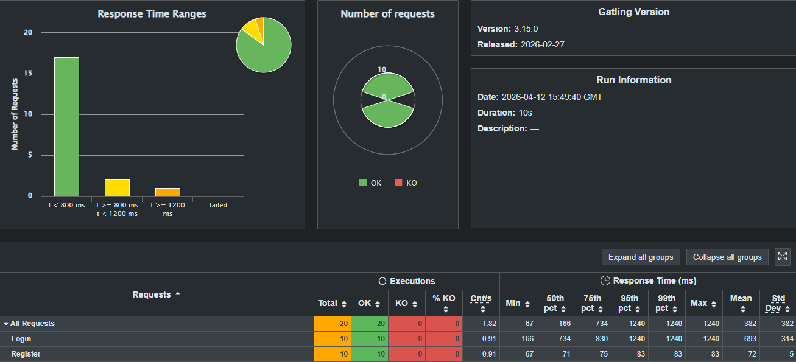
15.5.3. Análisis
El sistema respondió correctamente sin errores. El endpoint register mostró excelente rendimiento y login fue claramente más costoso.
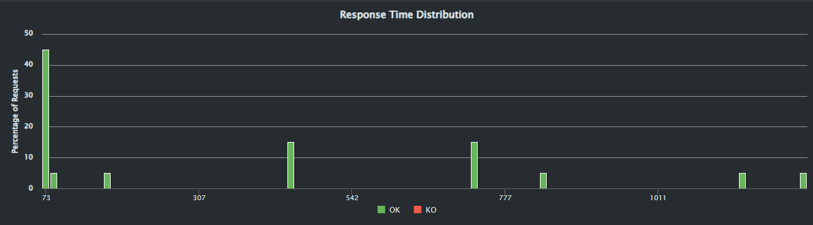
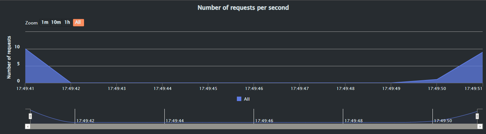
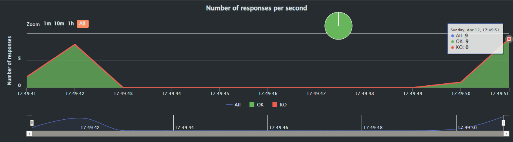
15.6. Resultados: Escenario Alta Carga (100 usuarios)
15.6.1. Métricas generales
-
Total de peticiones: 200
-
100 login + 100 register
-
Tasa de éxito: 100%
-
Errores KO: 0
-
Tiempo medio global: 4723 ms
15.6.2. Distribución observada
-
~100 peticiones por debajo de 800 ms
-
~100 peticiones por encima de 1200 ms
15.6.3. Rendimiento por endpoint
| Endpoint | Peticiones | Mínimo | p50 | p95 | Máximo | Media |
|---|---|---|---|---|---|---|
Login |
100 |
4700 ms |
8300 ms |
14200 ms |
14200 ms |
8300 ms |
Register |
100 |
84 ms |
78 ms |
870 ms |
870 ms |
104 ms |
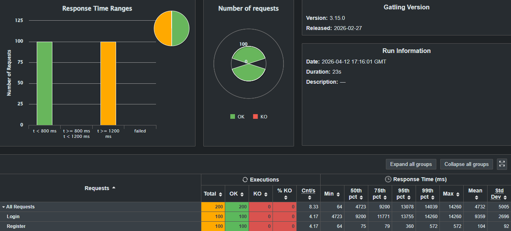
15.6.4. Análisis
Existe una diferencia crítica entre endpoints:
-
registermantiene tiempos excelentes incluso bajo carga. -
loginse degrada severamente al aumentar concurrencia.
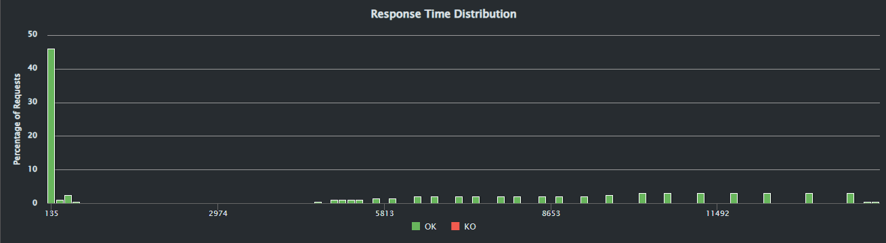
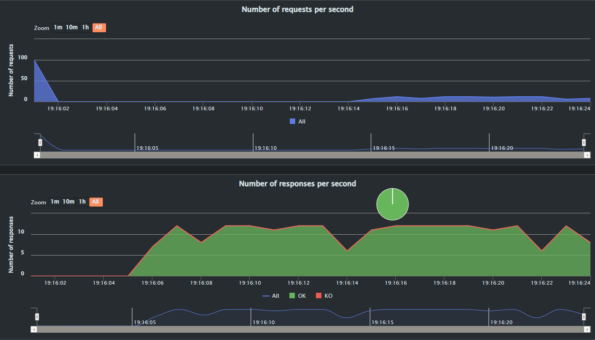
15.7. Ejecución
cd testCarga
./mvnw gatling:test16. Integración Continua (CI/CD)
16.1. Automatización
GitHub Actions ejecuta pruebas automáticamente en cada push y pull request.
16.2. Flujo
-
Instalación de dependencias
-
Ejecución de tests Rust
-
Ejecución de tests Node.js
-
Cobertura de código
-
Tests de carga
-
Análisis con SonarQube
16.3. Quality Gate
Estado: PASSED (All conditions passed)
| Métrica | Objetivo | Resultado Actual |
|---|---|---|
Cobertura |
≥ 80% |
85.6% |
Duplicación |
≤ 3% |
2.1% |
Vulnerabilidades |
0 |
Rating A |
16.4. Snapshot de Calidad (SonarQube)
| Categoría | Calificación (Rating) |
|---|---|
Security Rating |
A |
Security Hotspots |
E |
Reliability (Fiabilidad) |
A |
Maintainability (Mantenibilidad) |
A |
17. Requisitos de calidad
17.1. Árbol de calidad
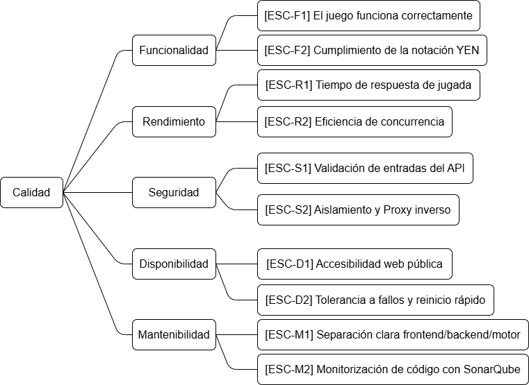
17.2. Escenarios de calidad
| ID | Atributo (Rama) | Escenario / Descripción (Hoja) |
|---|---|---|
ESC-F1 |
Funcionalidad |
El juego funciona correctamente: El sistema permite a los usuarios desarrollar una partida completa, aplicando todas las reglas del juego de principio a fin sin bloqueos ni errores lógicos en el motor. |
ESC-F2 |
Funcionalidad |
Cumplimiento de la notación YEN: Cuando el estado de la partida cambia, el motor (Rust) lo serializa y el backend lo transmite garantizando el cumplimiento estricto de la notación YEN, rechazando cualquier estado malformado. |
ESC-R1 |
Rendimiento |
Tiempo de respuesta de jugada: La comunicación entre el frontend, el API de usuarios y el motor del juego procesa y devuelve la jugada al usuario en menos de 1 segundo bajo condiciones normales de red. |
ESC-R2 |
Rendimiento |
Eficiencia de concurrencia: El uso del motor en Rust permite procesar de forma simultánea múltiples solicitudes de jugadas de distintas partidas activas sin que el tiempo de respuesta se degrade de forma notable. |
ESC-S1 |
Seguridad |
Validación de entradas del API: El backend realiza una validación estricta de todos los datos recibidos. Si un cliente envía datos malformados o jugadas ilegales, la solicitud es rechazada de forma segura (ej. HTTP 400). |
ESC-S2 |
Seguridad |
Aislamiento y Proxy inverso: La arquitectura garantiza que los puertos internos de la aplicación y la base de datos no sean accesibles directamente desde el exterior, utilizando Nginx como proxy inverso para enrutar el tráfico de forma segura. |
ESC-D1 |
Disponibilidad |
Accesibilidad web pública: La aplicación web es accesible desde internet mediante una IP/URL pública, permitiendo a los usuarios conectarse y jugar sin interrupciones. |
ESC-D2 |
Disponibilidad |
Tolerancia a fallos y reinicio rápido: Gracias al despliegue contenedorizado ( |
ESC-M1 |
Mantenibilidad |
Separación clara frontend/backend/motor: La arquitectura orientada a servicios permite que un desarrollador actualice la interfaz de usuario ( |
ESC-M2 |
Mantenibilidad |
Monitorización de código con SonarQube: El código fuente se somete a análisis estático mediante SonarQube, lo que permite detectar "code smells", medir la cobertura de pruebas y controlar la deuda técnica antes de cada integración. |
18. Riesgos y deuda técnica
18.1. Riesgos
| Riesgo | Descripción | Impacto | Probabilidad | Mitigación |
|---|---|---|---|---|
Complejidad tecnológica (Rust + Node/TS + React) |
El uso combinado de lenguajes de sistemas estrictos (Rust para el motor) y lenguajes web (TypeScript/Node) requiere distintos paradigmas. Esto eleva la curva de aprendizaje y dificulta que un desarrollador Full-Stack pueda resolver bugs transversales rápidamente. |
Alto |
Media |
Fomentar la revisión de código cruzada (Code Reviews) y mantener las interfaces (API REST / Notación YEN) estrictamente documentadas. |
Orquestación y Despliegue (Docker / Nginx) |
El sistema depende de múltiples contenedores (webapp, users, gamey, db) orquestados por |
Alto |
Baja |
Mantener los archivos |
Sincronización del estado del juego (Notación YEN) |
El estado del juego viaja desde el motor en Rust hasta el frontend pasando por el backend de usuarios. Cualquier fallo en el parseo o validación estricta de la notación YEN puede corromper la partida de los jugadores. |
Alto |
Media |
Implementar validaciones robustas en la entrada del API y tests unitarios exhaustivos en el motor de Rust que verifiquen casos límite de la notación YEN. |
Uso de base de datos no relacional (MongoDB) |
Al ser una base de datos orientada a documentos (schema-less), MongoDB no impone integridad referencial estricta (como las claves foráneas en SQL). Si la lógica del backend falla al gestionar relaciones (ej. entre usuarios y sus historiales de partidas), se pueden generar datos huérfanos o estados inconsistentes. |
Alto |
Media |
Forzar esquemas estrictos y validaciones a nivel de aplicación (ej. usando un ODM como Mongoose en el servicio |
Reducción de la capacidad operativa (Salida de un miembro) |
Al ser un equipo reducido de 5 personas donde todos los miembros participan en todas las áreas del proyecto (full-stack), la salida de un integrante no genera silos de conocimiento bloqueantes, pero aumenta considerablemente la carga de trabajo del resto. Esto reduciría la velocidad de desarrollo, alargando el tiempo necesario para lanzar nuevas versiones (releases). |
Medio |
Baja |
Ajustar ágilmente el alcance (scope) de las iteraciones si se reduce el equipo, automatizar el mayor número de tareas posibles (CI/CD) para ahorrar tiempo y mantener un ritmo de trabajo sostenible para evitar el agotamiento (burnout) del resto. |
18.2. Deuda técnica
| Deuda técnica | Descripción | Impacto | Probabilidad | Mitigación |
|---|---|---|---|---|
Code Smells y métricas de SonarQube |
Al utilizar herramientas de análisis estático (configuradas en |
Medio |
Alta |
Establecer umbrales de calidad (Quality Gates) en el CI/CD y dedicar tiempo en cada sprint para resolver las advertencias de SonarQube antes de integrar código. |
Cobertura de Tests End-to-End (E2E) |
Dada la arquitectura de microservicios, mantener pruebas funcionales automáticas que crucen desde el frontend ( |
Alto |
Alta |
Mantener y ampliar la cobertura de pruebas de integración y E2E utilizando Cucumber (BDD/Gherkin) y Playwright (actualmente configurados en el proyecto) para automatizar los flujos críticos de interacción del usuario en la interfaz web. |
Pruebas de Carga y Rendimiento (Gatling) |
Al ser un juego multijugador orquestado en contenedores, existe la deuda técnica de validar cómo se comporta el sistema bajo alta concurrencia. Actualmente el límite real de usuarios simultáneos sin degradación es desconocido. |
Alto |
Alta |
Implementar escenarios de estrés utilizando Gatling. Se aprovechará su Recorder y su DSL basado en Scala/JVM para simular múltiples partidas concurrentes y descubrir cuellos de botella reales en la infraestructura. |
Gestión básica de autenticación / Sesiones |
La implementación inicial de la autenticación puede carecer de mecanismos avanzados (refresco de tokens automáticos, invalidación de sesiones al cambiar roles, etc.), limitando la escalabilidad de seguridad. |
Medio |
Media |
Refactorizar el módulo de |
19. Glossary
| Term | Definition |
|---|---|
JSON |
Formato ligero de intercambio de datos basado en texto, estructurado en pares de clave-valor y listas. Es ampliamente utilizado para la comunicación entre servicios web y se emplea en el proyecto para el intercambio de datos entre el frontend, el backend y el motor del juego. |
Notación YEN |
Formato especifico de mensajes JSON que permite representar la situación de una partida del juego Y en un instante de tiempo. Ejemplo de la notación: {"size": 4, "turn": "R", "players": [ "B", "R"], "layout": "B/.B/RB./B..R"} |
API |
Interfaz de Programación de Aplicaciones (Application Programming Interface). Conjunto de reglas y protocolos que permiten la comunicación entre diferentes componentes de software. En el proyecto, se refiere a las interfaces que permiten la interacción entre el frontend, el backend y el motor del juego. |
Bots |
Programas de software que realizan tareas automatizadas. En el contexto del proyecto, se refiere a los programas que pueden jugar al juego Y de manera autónoma, utilizando la API para interactuar con el motor del juego. |
Microservicio REST |
Arquitectura de software que divide una aplicación en pequeños servicios independientes que se comunican a través de HTTP. En el proyecto, se refiere a la estructura del backend, donde cada servicio se encarga de una funcionalidad específica y se comunica con los demás a través de la API REST. |
Frontend |
Parte de la aplicación con la que los usuarios interactúan directamente. En el proyecto, se refiere a la interfaz gráfica que permite a los jugadores interactuar con el juego Y, enviar comandos y recibir información sobre el estado del juego. |
Backend |
Parte de la aplicación que maneja la lógica de negocio, el procesamiento de datos y la comunicación con el motor del juego. En el proyecto, se refiere a los servicios que gestionan las partidas, procesan los movimientos de los jugadores y mantienen el estado del juego. |
Motor del juego |
Componente central del sistema que implementa las reglas del juego Y, procesa los movimientos de los jugadores y determina el estado del juego. En el proyecto, se refiere al software que ejecuta la lógica del juego y proporciona la funcionalidad necesaria para que los jugadores puedan interactuar con él a través de la API. |
Unit Test |
Prueba de una unidad individual. |
Integration Test |
Prueba entre componentes. |
E2E Test |
Flujo completo de usuario. |
Coverage |
Porcentaje cubierto por tests. |
Gatling |
Herramienta de carga. |
YEN |
Formato de persistencia del juego. |
CI/CD |
Integración y despliegue continuo. |